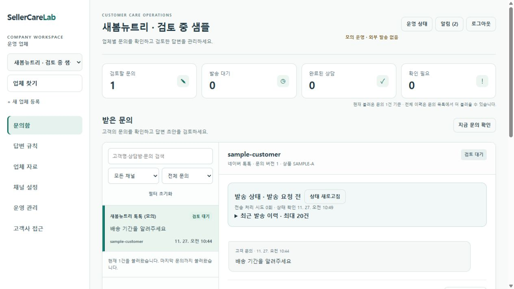

고객문의·리뷰 응대
상품·배송 문의와 리뷰를 확인하고 판매자의 정책과 말투에 맞춰 답변을 준비합니다.
SELLERCARELAB BY RO
상품과 운영 정책을 이해하고,
문의 정리부터 답변·후속 확인까지 함께합니다.
셀러케어랩은 알오(RO)의 고객문의 운영 서비스입니다.

업체별 기준과 상담 이력을 나누어 관리합니다.
WHAT WE DO
매장마다 다른 상품과 정책을 기준으로 안내합니다.
상품·배송 문의와 리뷰를 확인하고 판매자의 정책과 말투에 맞춰 답변을 준비합니다.
교환·반품·환불 관련 안내를 지원하고, 정책 밖의 요청과 보상 결정은 판매자에게 전달합니다.
이전 대화와 미완료 건을 살펴 이어서 응대합니다. 고객사에는 자기 업체의 조회 화면을 제공합니다.
WORKSPACE
운영 담당자는 문의를 확인하고 답변을 검토합니다. 고객사는 자기 업체의 처리 현황과 상담 내역을 조회합니다.
고객사 계정은 조회 전용입니다.
자료 수정·답변 승인·발송은 운영 담당자가 진행합니다.
상품 정보, 운영 정책과 말투를 확인합니다.
근거 자료를 바탕으로 초안을 검토하고 예외 사항을 구분합니다.
채널별 지원 방식에 따라 안내하고 남은 일을 확인합니다.
CHANNELS & SCOPE
계정 권한과 실제 수신·발송 시험 후 운영 범위를 확정합니다.
연결된 경로에서 문의를 수신하고 지원되는 방식으로 답변합니다. 반복 질문의 규칙 응답은 별도 승인한 조건에 한해 적용합니다.
게시판별 지원 여부를 확인해 문의를 수집하고 답변합니다. 게시판 속성과 권한에 따라 지원 범위가 달라집니다.
대화별로 구분하고 추가된 내용과 응대가 필요한 상담을 정리합니다. 일반 메신저 상담은 초안을 복사해 해당 관리자센터에서 발송합니다.
서비스 범위: 문의·리뷰 응대 및 안내. 실제 주문 취소·교환·환불 실행과 3PL 물류 운영은 포함하지 않습니다. 전화·개인 메신저·일반 단체방 응대와 상시 대기는 별도 제공 범위가 아닙니다.
LET’S TALK
운영 채널과 대략적인 문의량을 알려주세요.